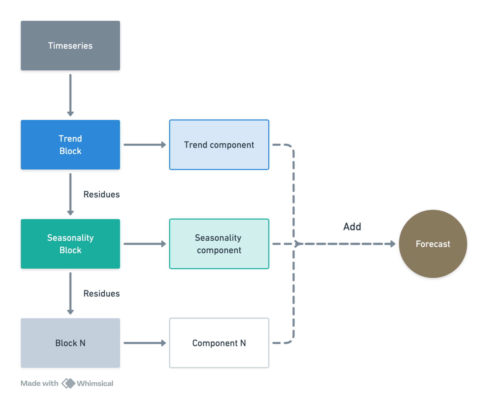
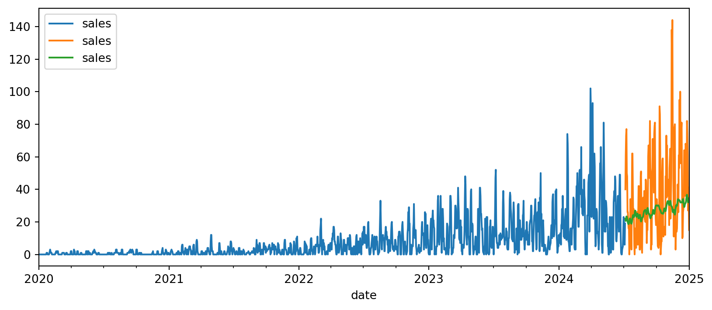
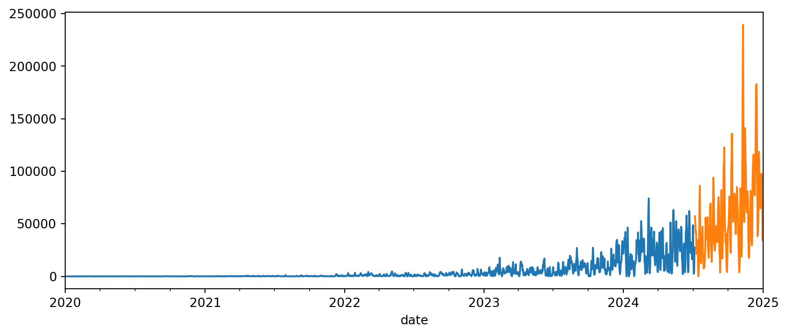
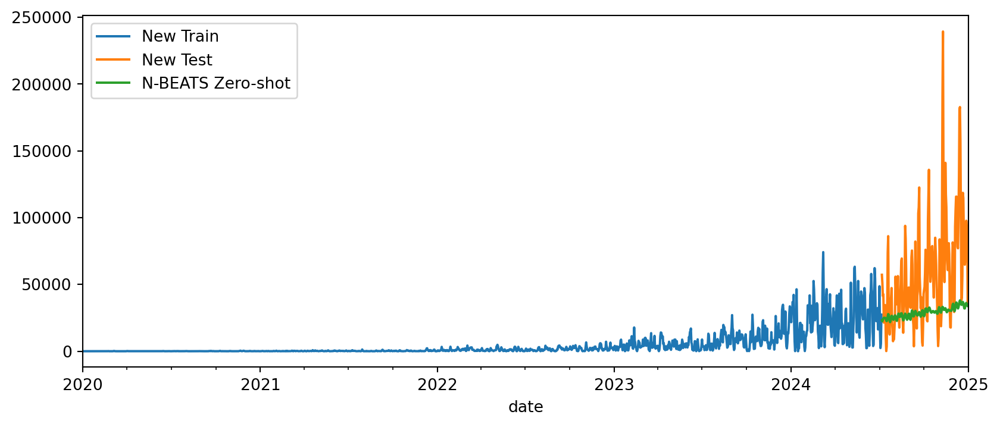

Code
import pandas as pd
import matplotlib.pyplot as plt
from sktime.utils.plotting import plot_seriesAlém de modelos de ML simples, também podemos usar modelos de deep learning para forecasting. Podemos com certeza usar uma rede neural simples como um regressor, assim como fizemos com os modelos de ML tradicionais. No entanto, existem alguns modelos com arquiteturas específicas para forecasting de séries temporais. Por exemplo, o N-BEATS é um modelo de deep learning que pode ser usado para forecasting.
Importante notar que esse livro/tutorial tem o objetivo de ser curto e prático, então não entraremos em muitos detalhes sobre deep learning ou sobre todos métodos existentes.
import pandas as pd
import matplotlib.pyplot as plt
from sktime.utils.plotting import plot_seriesfrom tsbook.datasets.retail import SyntheticRetail
dataset = SyntheticRetail("panel")
y_train, X_train, y_test, X_test = dataset.load(
"y_train", "X_train", "y_test", "X_test"
)
fh = y_test.index.get_level_values(-1).unique()N-BEATS é um modelo de séries temporais totalmente baseado em camadas densas (MLP)—nada de RNN/LSTM nem convolução. Ele pega uma janela do passado e entrega diretamente a previsão do futuro, aprendendo padrões como tendência e sazonalidade de forma pura, só com perceptrons.
O N-BEATS usa bases para construir sinais interpretáveis:
Assim, internamente, ele determina os coeficientes das funções base para modelar a série temporal, baseado no histórico observado, fazendo uma espécie de meta-aprendizado interno.
Os blocos são empilhados e executados de forma sucessiva. Pense numa fila de especialistas olhando a mesma janela do passado:

O Sktime nao é uma biblioteca especializada em deep learning, mas sim uma API uniforme que provê acesso aos mais diversos algoritmos.
Logo, também provemos acesso a bibliotecas especializadas em deep learning, como o Pytorch Forecasting, que implementa o N-BEATS.
Aqui, temos que definir os hiperparâmetros do modelo, como o número de blocos, o tamanho do contexto (janela de entrada), e o número de coeficientes para as funcões de base.
from sktime.forecasting.pytorchforecasting import PytorchForecastingNBeats
from pytorch_forecasting.data.encoders import EncoderNormalizer
CONTEXT_LENGTH = 120
nbeats = PytorchForecastingNBeats(
train_to_dataloader_params={"batch_size": 256},
trainer_params={"max_epochs": 1},
model_params={
"stack_types": ["trend", "seasonality"], # One of the following values: “generic”, “seasonality” or “trend”.
"num_blocks" : [2,2], # The number of blocks per stack.
"context_length": CONTEXT_LENGTH, # lookback period
"expansion_coefficient_lengths" : [2, 5],
"learning_rate": 1e-3,
},
dataset_params={
"max_encoder_length": CONTEXT_LENGTH,
"target_normalizer": EncoderNormalizer()
},
)
nbeats.fit(y_train.astype(float), fh=fh)üí° Tip: For seamless cloud uploads and versioning, try installing [litmodels](https://pypi.org/project/litmodels/) to enable LitModelCheckpoint, which syncs automatically with the Lightning model registry.
GPU available: False, used: False
TPU available: False, using: 0 TPU cores
HPU available: False, using: 0 HPUs
| Name | Type | Params | Mode
-------------------------------------------------------
0 | loss | MASE | 0 | train
1 | logging_metrics | ModuleList | 0 | train
2 | net_blocks | ModuleList | 1.4 M | train
-------------------------------------------------------
1.4 M Trainable params
0 Non-trainable params
1.4 M Total params
5.484 Total estimated model params size (MB)
60 Modules in train mode
0 Modules in eval mode`Trainer.fit` stopped: `max_epochs=1` reached.PytorchForecastingNBeats(dataset_params={'max_encoder_length': 120,
'target_normalizer': EncoderNormalizer(
method='standard',
center=True,
max_length=None,
transformation=None,
method_kwargs={}
)},
model_params={'context_length': 120,
'expansion_coefficient_lengths': [2, 5],
'learning_rate': 0.001,
'num_blocks': [2, 2],
'stack_types': ['trend', 'seasonality']},
train_to_dataloader_params={'batch_size': 256},
trainer_params={'max_epochs': 1})Please rerun this cell to show the HTML repr or trust the notebook.PytorchForecastingNBeats(dataset_params={'max_encoder_length': 120,
'target_normalizer': EncoderNormalizer(
method='standard',
center=True,
max_length=None,
transformation=None,
method_kwargs={}
)},
model_params={'context_length': 120,
'expansion_coefficient_lengths': [2, 5],
'learning_rate': 0.001,
'num_blocks': [2, 2],
'stack_types': ['trend', 'seasonality']},
train_to_dataloader_params={'batch_size': 256},
trainer_params={'max_epochs': 1})y_pred_nbeats = nbeats.predict(fh=fh, X=X_test)/opt/hostedtoolcache/Python/3.11.13/x64/lib/python3.11/site-packages/sktime/forecasting/base/adapters/_pytorchforecasting.py:655: FutureWarning: Downcasting object dtype arrays on .fillna, .ffill, .bfill is deprecated and will change in a future version. Call result.infer_objects(copy=False) instead. To opt-in to the future behavior, set `pd.set_option('future.no_silent_downcasting', True)`
_y.fillna(0, inplace=True)
üí° Tip: For seamless cloud uploads and versioning, try installing [litmodels](https://pypi.org/project/litmodels/) to enable LitModelCheckpoint, which syncs automatically with the Lightning model registry.
GPU available: False, used: False
TPU available: False, using: 0 TPU cores
HPU available: False, using: 0 HPUsfrom sktime.performance_metrics.forecasting import MeanSquaredScaledError
metric = MeanSquaredScaledError(multilevel="uniform_average_time")
metric(y_true=y_test, y_pred=y_pred_nbeats, y_train=y_train)np.float64(16.302682940467534)Agora, podemos visualizar o forecast para uma das séries. Vemos que, mesmo com poucas épocas de treinamento ou tuning, o N-BEATS já consegue capturar a tendência.
fig, ax = plt.subplots(figsize=(10, 4))
y_train.loc[10].plot(ax=ax, label="Train")
y_test.loc[10].plot(ax=ax, label="Test")
y_pred_nbeats.loc[10].plot(ax=ax, label="N-BEATS")
fig.show()
Zero-shot forecasting se refere ao fato de fazer previsão para uma série jamais vista pelo modeo, sem utilizar a série para treinar ou ajustar parâmetros dele.
Aqui, para simular esse cenário, vamos criar uma nova série temporal combinando duas séries do conjunto de treino.
new_y_train = (y_train.loc[0]**2 + y_train.loc[20]).astype(float)
new_y_test = (y_test.loc[0]**2 + y_test.loc[20]).astype(float)
# Plotting the new series
fig, ax = plt.subplots(figsize=(10, 4))
new_y_train["sales"].plot.line(ax=ax, label="New Train")
new_y_test["sales"].plot.line(ax=ax, label="New Test")
fig.show()
Na interface atual do sktime, usamos o argumento y do método predict para passar a nova série temporal para o modelo:
y_pred_zeroshot = nbeats.predict(fh=fh, y=new_y_train)/opt/hostedtoolcache/Python/3.11.13/x64/lib/python3.11/site-packages/sktime/forecasting/base/adapters/_pytorchforecasting.py:655: FutureWarning: Downcasting object dtype arrays on .fillna, .ffill, .bfill is deprecated and will change in a future version. Call result.infer_objects(copy=False) instead. To opt-in to the future behavior, set `pd.set_option('future.no_silent_downcasting', True)`
_y.fillna(0, inplace=True)
üí° Tip: For seamless cloud uploads and versioning, try installing [litmodels](https://pypi.org/project/litmodels/) to enable LitModelCheckpoint, which syncs automatically with the Lightning model registry.
GPU available: False, used: False
TPU available: False, using: 0 TPU cores
HPU available: False, using: 0 HPUsfig, ax = plt.subplots(figsize=(10, 4))
new_y_train["sales"].plot.line(ax=ax, label="New Train")
new_y_test["sales"].plot.line(ax=ax, label="New Test")
y_pred_zeroshot["sales"].plot.line(ax=ax, label="N-BEATS Zero-shot")
plt.legend()
plt.show()